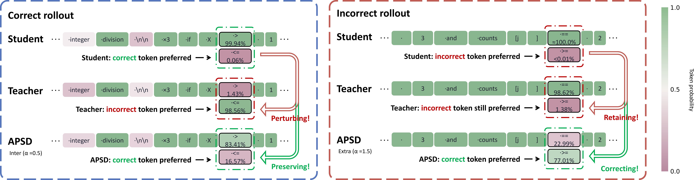
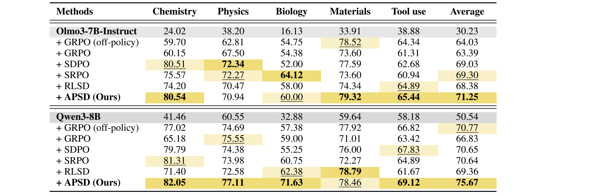
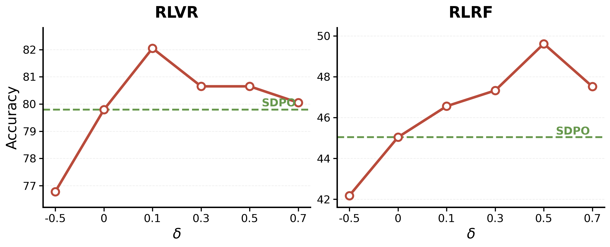

Abstract
Self-distillation methods improve language models by conditioning the current policy on feedback and using it as a self-teacher. Yet a single teacher-matching target can be poorly suited to both successful and failed rollouts: it may over-correct behavior that is already correct, while providing too little correction for incorrect behavior. We introduce Correctness-Dependent Asymmetric Target Distributions for Self-Distillation Policy Optimization (APSD), which constructs targets by reweighting the student distribution with a correctness-dependent power of the self-teacher-to-student probability ratio. For correct rollouts, APSD interpolates between student and self-teacher distributions; for incorrect rollouts, it extrapolates beyond the self-teacher. The resulting objective retains gradients through the student-dependent target. Across reinforcement learning with verifiable rewards and feedback, APSD improves performance over SDPO and reaches comparable performance with fewer training steps.
Motivation
A feedback-conditioned self-teacher can differ from the student in ways that require different responses. On correct rollouts, matching the teacher directly can disrupt successful behavior. On incorrect rollouts, the teacher may remain too close to the student's failed behavior to provide sufficient correction.

Figure 1. APSD adapts the distillation target to rollout correctness: interpolation preserves successful behavior, while extrapolation amplifies alternative behavior.

Figure 2. Teacher-student discrepancy in SDPO on LiveCodeBench v6, showing how direct matching can perturb a correct choice or retain an incorrect one.
Method
APSD constructs a correctness-dependent target by reweighting the student policy according to the self-teacher-to-student probability ratio. For a token v, the target is proportional to the student distribution raised to 1 minus alpha times the self-teacher distribution raised to alpha:
For correct rollouts, 0 < α < 1 places the target between the student and self-teacher. For incorrect rollouts, α > 1 extrapolates beyond the self-teacher. APSD minimizes reverse-KL self-distillation while retaining gradients through the student-dependent target.

Figure 3. APSD framework: sample rollouts, construct correctness-dependent targets, then optimize token-level self-distillation.
Theoretical analysis
The objective combines reverse-KL and a counterbalancing Rényi-divergence term. The coefficient controls the target's position along a generalized reverse-KL barycentric path and shapes gradient dynamics. Detaching the complete target removes the student-target coupling term and reduces the update to a scaled SDPO gradient.

Qualitative examples. Token-level examples illustrate APSD's treatment of successful and unsuccessful behavior.
Results
We evaluate APSD in reinforcement learning with verifiable rewards (RLVR) and rich feedback (RLRF). The paper reports results on five RLVR benchmarks and LiveCodeBench v6 across three Qwen3 model scales.

Table 1. RLVR performance across five benchmarks. APSD has the highest average for Olmo3-7B-Instruct and Qwen3-8B.

Table 2. RLRF performance on LiveCodeBench v6. APSD achieves the best overall Avg@4 and Pass@4 across the three Qwen3 scales.
Training efficiency and sensitivity
Across Qwen3 model scales, APSD reaches SDPO's performance with an average of 2.6 times fewer training steps. Sensitivity experiments show that reversing the proposed asymmetry degrades performance below SDPO.

Figure 5. Sensitivity to the asymmetry strength under RLVR and RLRF.
BibTeX
@misc{yoon2026correctnessdependentasymmetrictargetdistributions,
title={Correctness-Dependent Asymmetric Target Distributions for Self-Distillation Policy Optimization},
author={Suwan Yoon and Seongryong Jung and Changhee Lee},
year={2026},
eprint={2610.25973},
archivePrefix={arXiv},
primaryClass={cs.LG},
url={https://arxiv.org/abs/2610.25973}
}